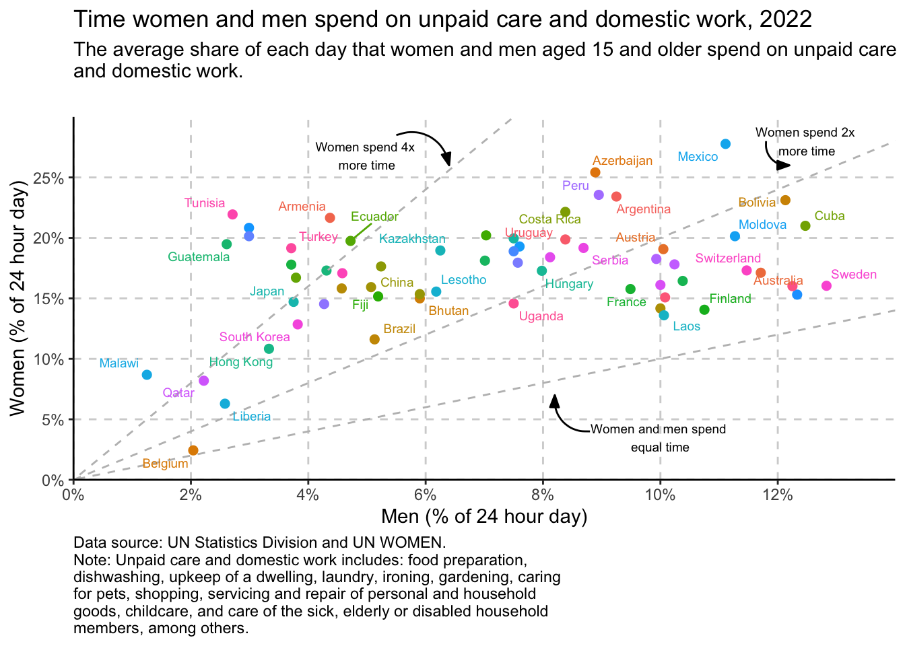

library(tidyverse)
library(owidapi)
library(scales)
library(ggeasy)
library(ggrepel)
library(plotly)
library(janitor)
catalog <- owid_get_catalog()day 4 big small
This plot illustrates the disproportionate amount of time that women across the world spend doing unpaid care and domestic work relative to men. Only Belgium comes anywhere near close to equal time spent by men and women.
I am particularly interested in whether there has been any shift in this ratio in the last 20 years, so my goal is to reproduce this plot in ggplot using the most recent data for each country and then look at change over time.
load packages
read in the data
dom <- owid_get("time-spent-in-domestic-work-female-vs-male") clean it up
Here I am renaming some unweildy variable names, filtering the data to include only years since 2000, and getting rid of NA values. I then filter that dataframe to only include the most recent data year for each country.
dom_clean <- dom %>%
rename(country = "entity_name",
female = "x_5_4_1__sl_dom_tspd__15_years_old_and_over__all_areas__female",
male = "x_5_4_1__sl_dom_tspd__15_years_old_and_over__all_areas__male") %>%
filter(year > 2000) %>%
filter(!is.na(female))
dom_recent <- dom_clean %>%
group_by(country) %>%
filter(year == max(year))plot
dom_recent %>%
ggplot(aes(x = male, y = female)) +
geom_point() Basic plot check! Things I need to change…
- white background with dotted gridlines
- coloured points
- fix scale on axis and % labels
- add diagonal lines
- add labels to diagonal lines and points
- add titles, subtitles, x and y
theme, axis, diagonal lines
theme_classic does a good job of getting rid of the grey background and adding dark axis lines. I add gridlines and with theme(panel.grid.major() and fix the scale on each axis by setting breaks and limits. I colour the points by country here (because the dataset is missing region information) and use easy_remove_legend() from ggeasy to hide the legend. I add diagonal lines representing equal, twice, and four times using geom_abline() with different slopes.
dom_recent %>%
ggplot(aes(x = male, y = female, colour = country)) +
geom_point(size = 2) +
theme_classic() +
easy_remove_legend() +
theme(panel.grid.major = element_line(color = "lightgray", linetype = 2)) +
scale_y_continuous(labels = percent_format(accuracy = 1, scale = 1),
expand = c(0,0), breaks = seq(0,25, 5), limits = c(0,30)) +
scale_x_continuous(labels = percent_format(accuracy = 1, scale = 1),
expand = c(0,0), breaks = seq(0,12, 2), limits = c(0,14)) +
geom_abline(intercept = 0, slope = 1, colour = "gray", linetype = 2) +
geom_abline(intercept = 0, slope = 2, colour = "gray", linetype = 2) +
geom_abline(intercept = 0, slope = 4, colour = "gray", linetype = 2) annonations
The ggannotate package is super useful here. I didn’t realise that there was an angle option in the Shiny app popup that helps you place your annotation. Here I have used ggannotate to place labels on the geom_abline() lines, and geom_text_repel() to label each point with a country label.
Note
It is SUPER fiddly to get the x, y position and angle of these labels just right and then… when you render the doc they can look slightly different to the inline output and then… when you export via ggsave they can look slight different again. I decide below it might not be worth the effort!
dom_recent %>%
ggplot(aes(x = male, y = female, colour = country)) +
geom_point(size = 2) +
theme_classic() +
easy_remove_legend() +
theme(panel.grid.major = element_line(color = "lightgray", linetype = 2)) +
scale_y_continuous(labels = percent_format(accuracy = 1, scale = 1),
expand = c(0,0), breaks = seq(0,25, 5), limits = c(0,30)) +
scale_x_continuous(labels = percent_format(accuracy = 1, scale = 1),
expand = c(0,0), breaks = seq(0,12, 2), limits = c(0,14)) +
geom_abline(intercept = 0, slope = 1, colour = "gray", linetype = 2) +
geom_abline(intercept = 0, slope = 2, colour = "gray", linetype = 2) +
geom_abline(intercept = 0, slope = 4, colour = "gray", linetype = 2) +
geom_text(data = data.frame(x = 12, y = 13, label = "Women and men spend equal time"),
mapping = aes(x = x, y = y, label = label), size = 3, angle = 16L, inherit.aes = FALSE) +
geom_text(data = data.frame(x = 12, y = 25, label = "Women spend 2x more time"),
mapping = aes(x = x, y = y, label = label), size = 3, angle = 29L, inherit.aes = FALSE) +
geom_text(data = data.frame(x = 6.2, y = 25.8, label = "Women spend 4 x more time"),
mapping = aes(x = x, y = y, label = label), size = 3, angle = 48L, inherit.aes = FALSE) +
geom_text_repel(aes(label = country), size = 2.5, max.overlaps = 10)titles and captions
Adding a title and subtitle, messed with my line annotations and I am not really sure why. I thought I had fixed the problem by adding some margin below the subtitle, making the font on the annotations smaller, and adjusting the xy position/angle of each label, but then got annoyed the that rendered angle didn’t look the same as my inline output.
I decided that it wasn’t important for the text to sit along the line and decided to add arrows instead! I also set a seed here after realising the everytime your run the code the geom_text_repel() positions the labels slightly differently if you don’t have a seed.
seed = 44
p <- dom_recent %>%
ggplot(aes(x = male, y = female, colour = country)) +
geom_point(size = 2) +
theme_classic() +
easy_remove_legend() +
theme(panel.grid.major = element_line(color = "lightgray", linetype = 2)) +
scale_y_continuous(labels = percent_format(accuracy = 1, scale = 1),
expand = c(0,0), breaks = seq(0,25, 5), limits = c(0,30)) +
scale_x_continuous(labels = percent_format(accuracy = 1, scale = 1),
expand = c(0,0), breaks = seq(0,12, 2), limits = c(0,14)) +
geom_abline(intercept = 0, slope = 1, colour = "gray", linetype = 2) +
geom_abline(intercept = 0, slope = 2, colour = "gray", linetype = 2) +
geom_abline(intercept = 0, slope = 4, colour = "gray", linetype = 2) +
geom_text(data = data.frame(x = 10, y = 3.5, label = "Women and men spend \nequal time"),
mapping = aes(x = x, y = y, label = label), size = 2.5, inherit.aes = FALSE) +
geom_text(data = data.frame(x = 12.5, y = 28, label = "Women spend 2x \nmore time"),
mapping = aes(x = x, y = y, label = label), size = 2.5, inherit.aes = FALSE) +
geom_text(data = data.frame(x = 5, y = 26.8, label = "Women spend 4x \nmore time"),
mapping = aes(x = x, y = y, label = label), size = 2.5, inherit.aes = FALSE) +
geom_text_repel(aes(label = country), size = 2.5, max.overlaps = 5) +
labs(title = "Time women and men spend on unpaid care and domestic work, 2022",
subtitle = "The average share of each day that women and men aged 15 and older spend on unpaid care \nand domestic work.",
x = "Men (% of 24 hour day)",
y = "Women (% of 24 hour day)",
caption = "Data source: UN Statistics Division and UN WOMEN.
Note: Unpaid care and domestic work includes: food preparation,
dishwashing, upkeep of a dwelling, laundry, ironing, gardening, caring
for pets, shopping, servicing and repair of personal and household
goods, childcare, and care of the sick, elderly or disabled household
members, among others.") +
theme(plot.caption = element_text(hjust = 0),
plot.subtitle = element_text(margin=margin(0,0,20,0))) +
geom_curve(data = data.frame(x = 5.5, y = 28.5, xend = 6.4, yend = 26),
mapping = aes(x = x, y = y, xend = xend, yend = yend), curvature = -0.515,
arrow = arrow(20L, unit(0.1, "inches"), "last", "closed"), alpha = 1, inherit.aes = FALSE) +
geom_curve(data = data.frame(x = 11.8, y = 28, xend = 12.2, yend = 26),
mapping = aes(x = x, y = y, xend = xend, yend = yend), curvature = 0.515,
arrow = arrow(20L, unit(0.1, "inches"), "last", "closed"), alpha = 1, inherit.aes = FALSE) +
geom_curve(data = data.frame(x = 8.8, y =4, xend = 8.2, yend = 7),
mapping = aes(x = x, y = y, xend = xend, yend = yend), curvature = -0.515,
arrow = arrow(20L, unit(0.1, "inches"), "last", "closed"), alpha = 1, inherit.aes = FALSE)
p
interactivity
It is still miraculous to me that you can get an interactive plot like this in a single line of code. plotly for the win!
Note
Note I have ignored a lot of red warning messages from plotly here about how it doesn’t like geom_text_repel() or geom_curve()
ggplotly(p)bonus
How has the ratio of time that women and men spend in unpaid domestic labour changed over time? Given the theme today is big/small, I am going to choose the countries that have the biggest vs smallest discrepancy.
I am dropping extra columns and computing a new variable that is the difference between the percent of time that women and men spend in unpaid domestic labour for each country and year. I am arranging these scores in descending order and then looking at the top 3 (head) and the bottom 3 (tail).
difference <- dom_clean %>%
select(-entity_id, -population_historical, -owid_region) %>%
rowwise() %>%
mutate(difference = female - male) %>%
arrange(desc(difference))
head(difference, 3)# A tibble: 3 × 5
# Rowwise:
country year female male difference
<chr> <int> <dbl> <dbl> <dbl>
1 Mexico 2009 31.0 10.4 20.7
2 Armenia 2004 24.0 4.58 19.5
3 Tunisia 2006 21.9 2.71 19.2tail(difference, 3)# A tibble: 3 × 5
# Rowwise:
country year female male difference
<chr> <int> <dbl> <dbl> <dbl>
1 Norway 2011 15.3 12.3 2.98
2 Colombia 2013 4.22 2.03 2.19
3 Belgium 2013 2.43 2.04 0.39I am filtering the data to only include these top and bottom countries. Unfortunately we don’t have data for several years in all of these countries, so lets plot Columbia and Mexico for illustration.
topbottom <- c("Norway", "Colombia", "Belgium", "Mexico", "Armenia", "Tunisia")
tb <- difference %>%
filter(country %in% topbottom) %>%
arrange(country, year)
tb %>%
tabyl(country) country n percent
Armenia 2 0.18181818
Belgium 1 0.09090909
Colombia 3 0.27272727
Mexico 3 0.27272727
Norway 1 0.09090909
Tunisia 1 0.09090909plot
It is interesting that the difference in the amount of time that men and women engage in unpaid domestic labour has come down in Mexico (one of the most discrepant countries in 2009) but become more different in Colombia, who in 2013 had one of the smallest differences between men and women.
tb %>%
filter(country %in% c("Mexico", "Colombia")) %>%
ggplot(aes(x = year, y = difference, colour = country)) +
geom_point() +
geom_line() +
facet_wrap(~country) +
easy_remove_legend() +
scale_y_continuous(labels = percent_format(accuracy = 1, scale = 1),
expand = c(0,0), breaks = seq(0,25, 5), limits = c(0,25)) +
scale_x_continuous(breaks = seq(2009,2021, 2)) +
theme_classic() +
labs(y = "Percent difference in women and men", y = "Year")